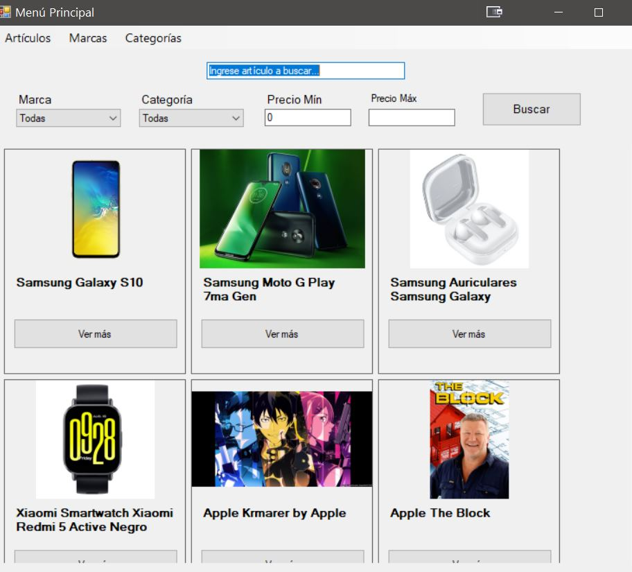
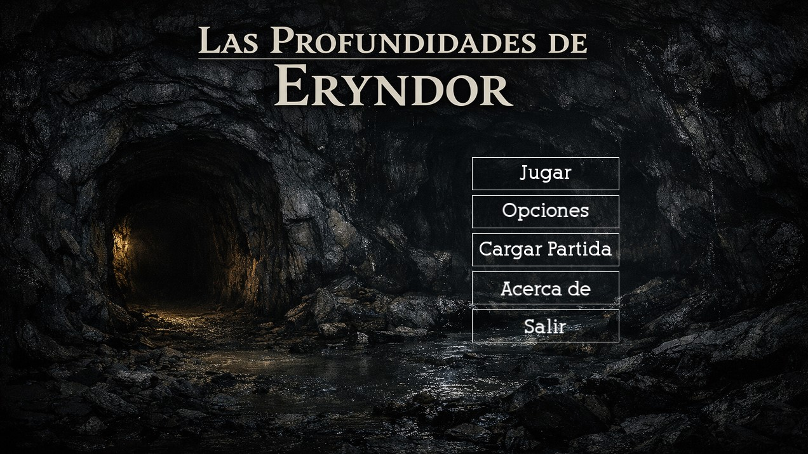

Junín, Buenos Aires, Argentina
Germán Andrés González
Desarrollador C# y Backend .NET · Programador Python y Microcontroladores
Soy traductor técnico con más de 20 años de experiencia que está dando el salto al desarrollo de software. Combino la precisión del lenguaje con la lógica del código para crear soluciones claras y bien documentadas.
Perfil y Trayectoria
Soy traductor profesional inglés–español con más de 20 años de experiencia y desarrollador en formación. Durante todo este tiempo trabajé con clientes de distintos países y culturas, traduciendo manuales técnicos, procedimientos de seguridad y documentación industrial para empresas de los sectores automotriz y de maquinaria agrícola. Ese trabajo me enseñó a prestar atención al detalle, a comunicarme con claridad y a adaptarme a equipos y contextos muy diversos.
Hoy me formo en la UTN y desarrollo proyectos con Python, C#, C++ y bases de datos, además de trabajar con microcontroladores. Si bien mi recorrido como programador recién comienza, mi experiencia como traductor es un plus: estoy acostumbrado a cumplir plazos exigentes, entiendo documentación técnica en dos idiomas y sé escribir documentación clara para que otras personas puedan entender y mantener mi trabajo.
Me motiva aprender de forma continua y sumarme a equipos donde pueda aportar una mirada distinta, cuidadosa y orientada a la comunicación.
Inglés (C1) y Español (nativo)
Estudiante de la Tecnicatura Universitaria en Programación, UTN (Universidad Tecnológica Nacional), desde 2025
Diplomado en Programación Python, UTN (Universidad Tecnológica Nacional), desde 2025
Traductor técnico freelance inglés–español
Experiencia laboral y formación
2025 – hoy
Formación en programación. Tecnicatura Universitaria en Programación y Diplomado en Programación Python en la UTN. Proyectos académicos en C#, C++ y Python.
2003 – hoy
Traductor freelance inglés–español. Traducción de manuales técnicos, procedimientos de seguridad y documentación industrial para clientes del sector automotriz y de maquinaria agrícola, de distintos países. Entregas de calidad con plazos ajustados. Incluye materiales académicos y técnicos relacionados con software (por ejemplo, J2EE).
2004 – 2008
RZ Translations, traductor in-house (tiempo completo). Gestión de proyectos de traducción variados, gestión terminológica y comunicación con clientes.
2004
EstudioDiez.org, traductor y agente de marketing (La Plata). Traducciones de corto plazo y colaboración con el equipo de marketing en acciones de difusión.
Conocimientos
Lenguajes
C#
C++
Python
SQL
Frameworks y librerías
.NET
Windows Forms (WinForms)
SFML
Tkinter
Bases de datos
SQL Server
SQLite
Microcontroladores
Arduino
ESP32
C++
MicroPython
Herramientas y documentación
Git / GitHub
Visual Studio
Thonny
Sphinx (documentación en Python)
Traducción y habilidades blandas
Traducción técnica EN↔ES
Herramientas CAT
Gestión terminológica
Comunicación internacional
Plazos exigentes
Atención al detalle
Proyectos Destacados

Sistema de Gestión de Catálogo de Artículos
Aplicación robusta, dinámica y orientada a objetos diseñada para la gestión integral de catálogo de artículos.
Rol: Programador
Ver en GitHub
Las Profundidades de Eryndor
Juego de rol (RPG) desarrollado íntegramente en C++ utilizando la biblioteca multimedia SFML 2.5.1.
Rol: Programador
Ver en GitHubOtros proyectos
Clientes
Aplicación de escritorio para administración de clientes con persistencia de base de datos en Python.
Rol: Programador
Ver en GitHub